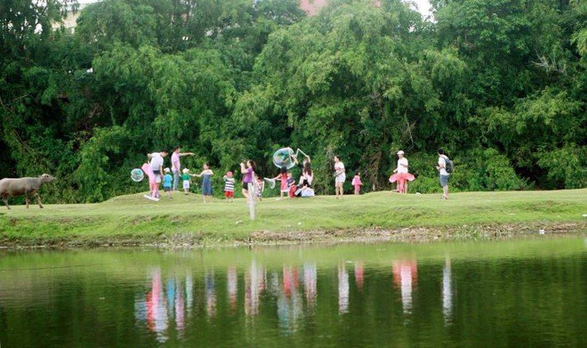
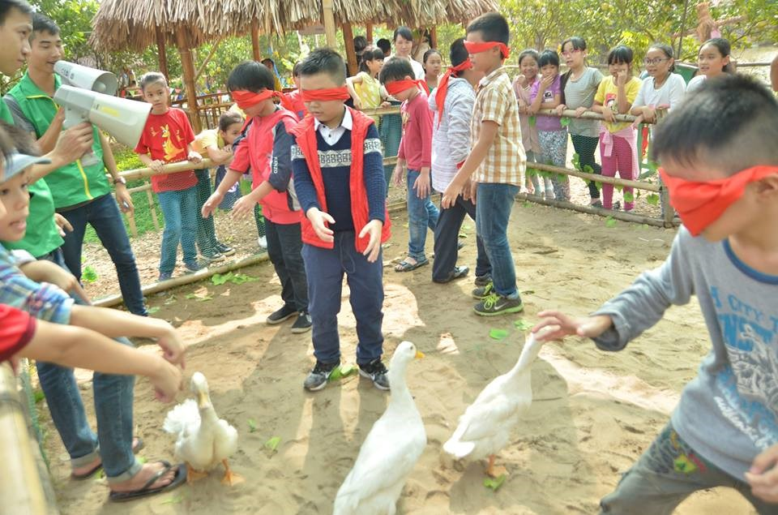

Địa chỉ :Cầu 72, xã Vân Côn, Hoài Đức, Hà Nội
Hotline: 0909 843 956
Nông trang Bá Tân là nơi các gia đình, trường học cho con trẻ tới trải nghiệm các hoạt động thực tế. Giáo dục con trẻ biết yêu thương, trân quý vạn vật xung quanh.Không cần tốn thời gian đi đâu xa, bạn và gia đình vẫn có thể tận hưởng thiên nhiên yên bình ngay tại các trang trại giáo dục tại Thủ đô Hà Nội, giúp con trẻ có những trải nghiệm bổ ích.

Đường đến nông trang đi trên một con đê thật nên thơ, hai bên là đồng lúa xanh bát ngát và những vườn nhãn xanh mướt.
Cách trung tâm TP. Hà Nội khoảng 15 km, nông trang Bá Tân là điểm đến lý tưởng cho những ai yêu thích sự thanh bình, yên ả của làng quê Bắc Bộ. Những ngôi nhà tại nông trang được làm theo nếp nhà truyền thống cổ xưa.Nguyên liệu chủ yếu bằng gỗ, lợp ngói, mùa hè thì mát, đông về thì ấm.

Đây là môi trường giúp trẻ phát triển lành mạnh và toàn diện hơn, khuyến khích các hoạt động chơi mà học, kết hợp phát triển thể chất, rèn luyện kỹ năng sống và tăng cường gắn kết tập thể, gia đình.
Chúc bạn có chuyến đi vui vẻ